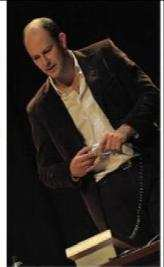
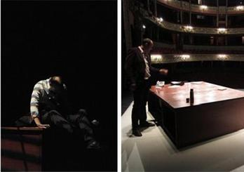
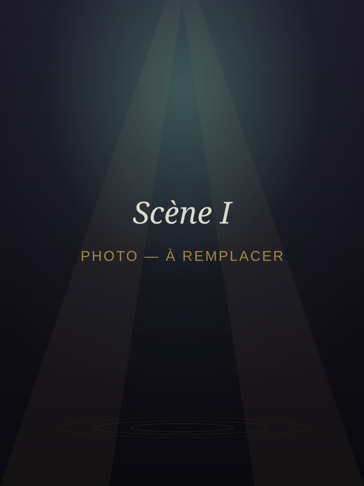
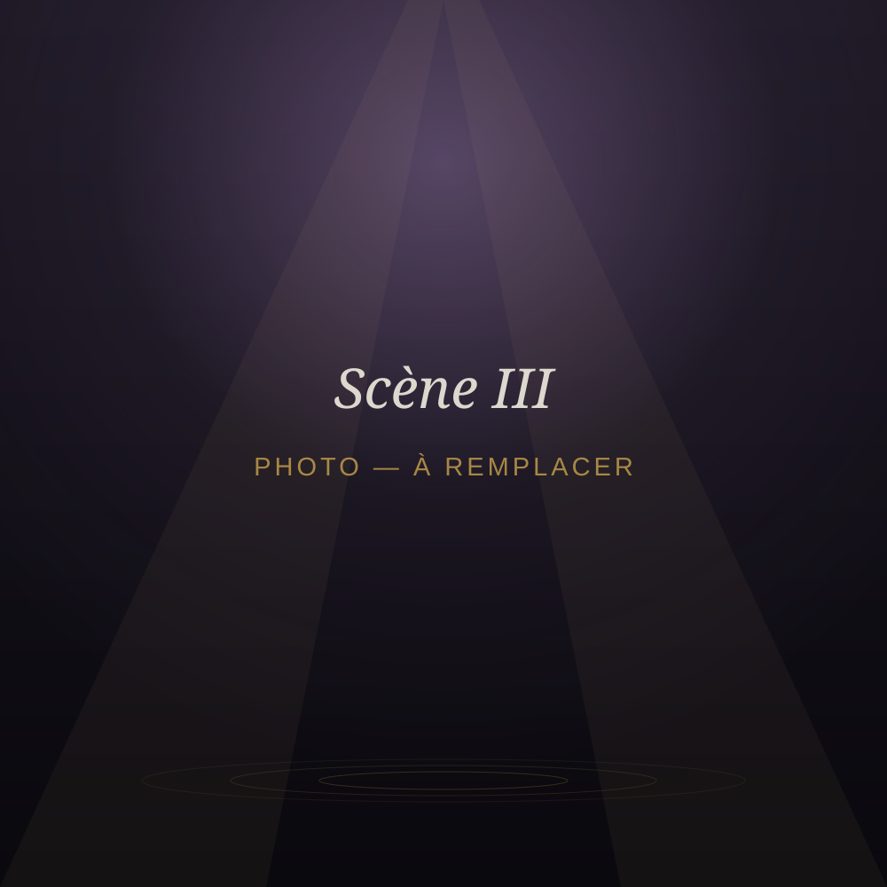

Autres spectacles
Deux spectacles souvent appréciés, longuement diffusés et salués par la presse : Oleanna de David Mamet et Dans la solitude des champs de coton de Bernard-Marie Koltès.
« Oleanna »
Un professeur d'université reçoit une étudiante venue contester sa note. De cet entretien apparemment banal, David Mamet tire un affrontement vertigineux sur le pouvoir, le langage et l'accusation. David Seigneur y incarnait le professeur.


À propos d'« Oleanna »
« Une vraie bombe à retardement. »Le Canard enchaîné — Jean-Luc Porquet
« Une expérience presque freudienne. »Libération — Bérénice Le Mestre
« Éblouissante Oleanna. »Le Figaro — Nathalie Simon
« Foudroyant. »Politis — Anaïs Heluin
« Fascinant. »Pariscope — Dimitri Denorme
« Un thriller d'une rare intensité dramatique. »Le Parisien — Marie-Emmanuelle Galfré
« Dans la solitude des champs de coton »
À la nuit tombée, dans un lieu indéterminé, un dealer et un client se jaugent, se cherchent et se défient. La langue somptueuse de Koltès fait de cette rencontre un duel philosophique autant que charnel. David Seigneur y incarnait le dealer.


À propos de « La Solitude »
« C'est une langue de feu, un frisson de théâtre qui nous sont donnés. »Les Trois Coups — Tiphaine Pocquet du Haut-Jussé
« Une narration délicate ; une très belle performance. »La Provence — Marie Dumas
« Un théâtre éclairé et riche de résonances. »Rueduthéâtre — Aurélia Hillaire
Les créations passées
À ses débuts, la compagnie a monté Molière, Dario Fo et deux pièces de l'écriture de Patrick Roldez — dont, en 2007, une « écriture du fragment » intitulée Le deuxième homme, qui faisait déjà écho à l'œuvre autofictionnelle de Camus. En 2015, la compagnie créait Misanthrope (titre provisoire), un montage de textes contemporains.
« Le Premier Homme », d'après Albert Camus
La nouvelle création de la compagnie est en tournée — actuellement au Festival OFF d'Avignon.
Découvrir le spectacle →